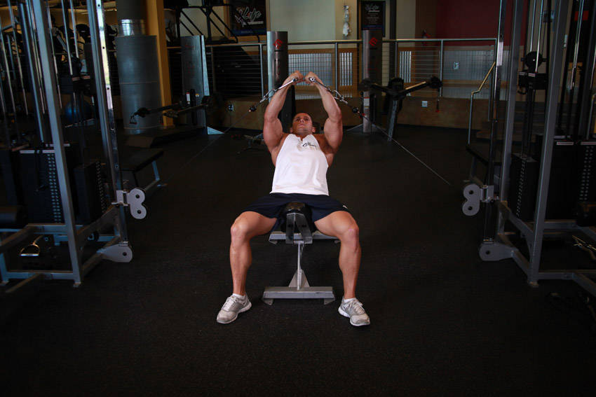

- To get yourself into the starting position, set the pulleys at the floor level (lowest level possible on the machine that is below your torso).
- Place an incline bench (set at 45 degrees) in between the pulleys, select a weight on each one and grab a pulley on each hand.
- With a handle on each hand, lie on the incline bench and bring your hands together at arms length in front of your face. This will be your starting position.
- With a slight bend of your elbows (in order to prevent stress at the biceps tendon), lower your arms out at both sides in a wide arc until you feel a stretch on your chest. Breathe in as you perform this portion of the movement. Tip: Keep in mind that throughout the movement, the arms should remain stationary. The movement should only occur at the shoulder joint.
- Return your arms back to the starting position as you squeeze your chest muscles and exhale. Hold the contracted position for a second. Tip: Make sure to use the same arc of motion used to lower the weights.
- Repeat the movement for the prescribed amount of repetitions.
This exercise appears in Programmd training programs. Take the quiz to find one for your gym.
Find your program